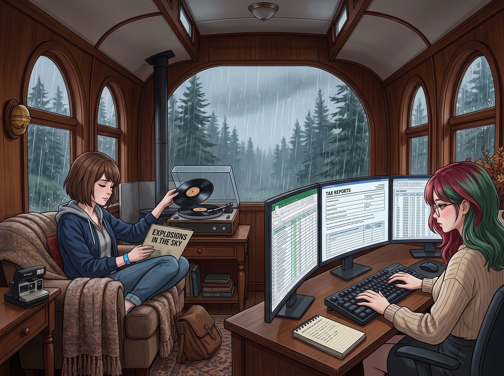
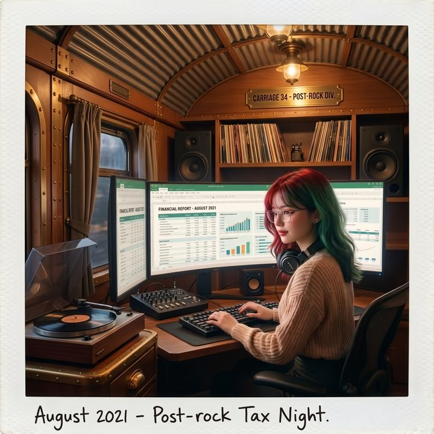

無歌詞的歌


在 PNCA（太平洋西北藝術學院）時期，Lily 確實對 Chloe 那堆震耳欲聾的地下龐克 CD 進行過一次極度嚴苛的「合規審計」。
當時，Lily 用一份長達十二頁的 PDF 報告，將龐克音樂定義為：「一種具有高傳染性、煽動反建制情緒的聽覺污染源。其無序的鼓點和失真的吉他頻率，會導致 Loft 的住戶（尤其是 Chloe 學姐）的腎上腺素飆升，從而增加衝動消費和破壞公共財產的財務風險。」
但對於 Max 偏愛的獨立民謠（Indie Folk）和後搖滾（Post-Rock），這位行政黑魔法師的「審計演算法」，卻出現了截然不同的反應。
這是一個典型的西雅圖雨天。
二號車廂外，冷杉林被雨水沖刷著。Max 窩在沙發裡，將一張《Explosions in the Sky（天空爆炸）》的後搖滾黑膠唱片，放進了那台淘來的復古唱片機裡。
沒有主唱的嘶吼，沒有激烈的歌詞。
只有乾淨、空靈的吉他撥弦聲，像是滴落在水面上的漣漪，在安靜的車廂裡緩緩盪漾開來。音樂的結構極度克制，卻又在底層醞釀著某種宏大的情緒。
Lily 坐在多螢幕工作站前，原本正在以每分鐘 120 字的速度敲擊著鍵盤，處理著一堆複雜的稅務報表。
隨著後搖滾的吉他聲逐漸交織、層層疊加（Crescendo），Max 注意到，Lily 敲擊鍵盤的頻率開始變慢了。
「太吵了嗎，Lily？」Max 輕輕問了一句，準備去調低音量。她知道 Lily 的大腦每天要處理海量的數據，通常需要絕對的安靜或者單調的白噪音。
「不，請不要暫停，Max 學姐。」
Lily 的雙手懸停在鍵盤上方。她沒有回頭，目光看著螢幕上跳動的數據，但鏡片後的眼神卻變得異常深邃。
「我正在對這段音訊的底層邏輯進行『反向工程解析』。」Lily 推了推圓框眼鏡，開始用她那套標誌性的行政語言，來解構這種充滿感性的音樂：
「首先是獨立民謠（Indie Folk）。比如您之前放的 Syd Matters。我做過紀錄。在播放那些木吉他分解和弦的晚上，Victoria 學姐平均少抱怨了四次，Kate 學姐比平常早了四十分鐘入睡，Chloe 學姐摔扳手的次數歸零。在我的營地管理模型中，這種音樂被歸類為『高能效的生物學鎮靜劑』。它能顯著減少 Victoria 學姐的暴躁發言，並提升 Kate 學姐的睡眠品質。這是一項極具 ROI（投資回報率）的聲學資產。」
Max 聽得目瞪口呆，忍不住笑了出來：「所以，妳把我的民謠當成了某種……群體鎮靜噴霧？」
「是的，合規且免費。」Lily 乖巧地承認了。
「那現在放的後搖（Post-Rock）呢？」從車底鑽出來、手裡還拿著扳手的 Chloe 也湊了過來，滿臉戲謔，「這玩意兒連句歌詞都沒有，妳那顆精打細算的大腦能聽懂什麼？」
Lily 沉默了幾秒鐘。
唱片機裡的音樂正好推進到了高潮部分。原本克制的吉他音牆瞬間爆發，猶如一場無聲的風暴，宏大、悲壯、卻又充滿了某種破碎後的希望感。
「正是因為沒有歌詞，Chloe 學姐。」
Lily 的聲音變得異常輕柔，甚至帶著一絲難以察覺的脆弱，那是她在經歷了對父母的「心理哀悼」後，留下的那道無法癒合的裂縫。
「如果有歌詞，我的大腦就會本能地啟動自然語言處理（NLP）去分析它的語義、邏輯和目的。但後搖滾沒有語義。它拒絕被定義。」
Lily 轉過身，看著那張旋轉的黑膠唱片：
「它用純粹的物理聲波，構建了一個拓撲學上完美的漸強結構。它像是一條指數增長的曲線。」
Chloe 張了張嘴，想說點什麼，又閉上了。
「在過去的幾天裡，」Lily 繼續說，聲音更輕了，「我因為清空了原生家庭的『不良資產』，系統裡留下了一個巨大的『情感黑洞』。我試圖用工作和報表去填補它，但邏輯無法填補悲傷。」
Max 沒有出聲，只是在沙發上坐直了一點。
Lily 抬起頭，看著 Max，眼底閃爍著一種被音樂溫柔擊中的光芒：
「您的後搖滾也沒有填補它。」Lily 輕聲說，「但它做了另一件事。這種沒有文字的宏大音牆，繞過了我大腦裡的『合規防火牆』。它不要求我計算成本，不要求我填寫表格，也不要求我把那個黑洞修好。它只是讓我可以……在那個空洞旁邊，安安靜靜地坐一會兒。」
她頓了頓：「就像您上次說的。讓它空著。」
車廂裡安靜了下來，只有黑膠唱片機裡傳來的、猶如海浪般澎湃的吉他轟鳴聲。
Chloe 愣了半天，手裡的扳手差點掉在地上。她轉頭看著 Max，壓低聲音說：「超級麥克斯，妳的音樂居然駭進了那個黑魔法師的底層代碼？她剛才是不是用數學和物理名詞，給妳寫了一篇八百字的樂評？」
Max 溫柔地笑了。她沒有回答 Chloe，而是走到工作站旁，輕輕拍了拍 Lily 的肩膀。
「不用謝，Lily。如果妳還需要找個地方坐一會兒，我這裡還有整個 Mogwai 和 Explosions in the Sky 的專輯庫。無限期、免費向妳的防火牆開放。」
Lily 嘴角勾起一抹極度安心的微笑。
她重新將手放在鍵盤上，伴隨著後搖滾那種充滿力量的延音，繼續處理著她的稅務報表。只是這一次，那些冰冷的數字裡，似乎多了一絲屬於人類的溫度。
Max 退後兩步，舉起寶麗來相機，將鏡頭對準了坐在多螢幕前、被溫暖的橘色檯燈和宏大音牆包圍著的行政黑魔法師。
「喀嚓。」
照片吐出。Max 在背面寫下：
『規則第 80 條：永遠不要低估沒有歌詞的音樂。因為在這個世界上，能讓一個對數字極度敏銳的行政惡魔安靜下來、並為之打開心門的，只有那些無法被表格定義的、純粹的後搖滾。』